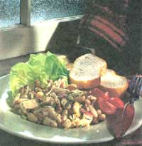

All bean jokes aside, it's time to get serious about one of nature's healthiest and most economical foods. And there's no need for bean boredom, since so many different varieties of legumes are available (bet you don't know them all - how about rattlesnake, anasaki or cranberry?) for cooking up a comforting pot of soup for a nippy early spring day. Bean consumption in the United States has increased steadily in the past 10 years to 10 pounds annually per person (in Mexico it's 40 pounds!) and with good reason. The tasty bean is next to wheat bran in fiber, and is rich in B vitamins, zinc, potassium and iron. Packed with amino acids, they're excellent as a high-protein meat substitute. But like all vegetable proteins, the bean protein is incomplete, missing one or two amino acids. This is easily remedied by eating whole grains, brown rice, or a little meat or cheese with the beans to complete the protein.
"Fat-free" by U. S. Department of Agriculture standards, a cup of most varieties of cooked beans contains less than 1 gram of fat (soybeans are the exception). Instead of fat, the bean protein comes packaged with complex carbohydrates that are made up of starches, fiber and complex sugars. Legumes are great for athletes and a perfect weight-watcher food. Since the starches are slow to digest, they stabilize your blood sugar so your hunger pangs are few.
Let's face it, many people experience an undesirable gastronomic effect as a result of eating a bowl of beans. Many other foods, such as the cruciferous vegetables cabbage, broccoli and cauliflower, have the same effect, but it is the bean that possesses the bad reputation. These vegetables and beans contain complex sugars called "oligosaccharide" that the body only digests with some difficulty and some consequences. We can remedy this situation somewhat by soaking the beans and discarding the water, then cooking the beans in fresh water. Rinse canned beans well. If you sprout your beans, the oligosaccharide will be almost totally eliminated. Try legumes that are easier to digest such as lentils, split peas, adzuki beans, limas and black-eyed peas. In cultures where diets are based on beans, people's bodies have a greater tolerance to the bean's complex sugars. So the solution is: the more you eat the less you ... (well, you know).
The cooking time for beans will vary depending on the variety, size and age of the beans, the hardness of your water, and the altitude at which you live. The beans will be more plump and tender and require less cooking time if you soak them before cooking. (Lentils, split peas and black-eyed peas don't require soaking.)
Soaking: In a large bowl or pot, put 8 to 10 cups of water for every pound of beans and let them soak overnight. There's been some controversy in our bacteria-conscious society regarding the soaking time for beans. You'll remember all those little bubbles that float on top of the water after an overnight soaking - those bubbles indicate that fermentation (bacteria) has begun. I've been soaking beans overnight for decades and I'm obviously alive and well. But to be on the safe side, especially in hot weather, why not soak the beans 8 to 10 hours and if it must be longer, stick them in the refrigerator. After soaking, drain the beans and add fresh water to the pot. Add a lid and they're ready to cook.
Quick Soak: Bring the beans and water to a boil and cook for two minutes. Remove from the heat, cover, and let stand one to four hours; then cook the beans.
Microwave Soak: For two cups of dry beans, add two cups of water, cover tightly, and cook at high heat for 12 to 20 minutes (depending on the wattage of the oven). Let sit for five minutes. Drain off water, add hot tap water to cover, cover tightly, and let sit for an hour and then drain. They are then ready to cook.
Cooking: Cover the pot (the lid may be slightly ajar to prevent boiling over) and simmer the beans one to two hours until tender. You may use an unsalted stock in which to cook the beans but never add salt, molasses, tomatoes, vinegar, wine or fruit juices until after the beans are tender, since the acid slows down the softening process. Some people like to add a tablespoon of oil to cut down on the bean foam that likes to ooze out all over the stove. Cooked beans will keep about five to six days in the refrigerator or up to six months in the freezer.
This is a hearty winter soup that can be topped with freshly grated Parmesan and chopped parsley.
2 cups dry white beans - cannellini (white kidney) or northern beans
4 cups shredded cabbage
4 cups chopped kale
1 tablespoon olive oil
1 large onion, chopped
3 large cloves garlic, minced
2-3 carrots (not too large), sliced into thin circles
3 medium red or white skinned potatoes, cut into 1/2-inch cubes
2 15-ounce cans chicken broth
1 tablespoon tomato paste
1 teaspoon red or white wine vinegar
1/2 teaspoon salt
1/2 teaspoon cayenne pepper
freshly ground pepper
1 teaspoon dried basil
1/2 teaspoon thyme
Toppings: (optional) Italian parsley, chopped
freshly grated Romano or Parmesan cheese
Soak the beans. Drain and recover with water, cover, and simmer for 45 to 60 minutes until the beans are tender. Drain the beans, saving three cups of the water. Set aside. In a food processor or using a knife, shred the cabbage coarsely and chop the kale, setting them both aside. In olive oil, sauté the onion until wilted, add the garlic and sauté, but don't brown. Add the cabbage, carrots, potatoes, broth and tomato paste, wine vinegar, and seasonings. Cover and simmer for about 30 minutes. Meanwhile, in a blender, puree half the beans with the 3 cups of bean water. After the 30 minutes, add the whole beans and puree to the soup. Simmer until the potatoes are tender, adding extra water and salt or ground pepper if necessary. Just before serving, stir in the kale for a minute or two - just until it wilts.
Here's a crunchy alternative to potato chips with only 1 gram of fat per serving.
1 15-ounce can garbanzo beans (chick peas)-drained and rinsed.
1/4 teaspoon ground cumin
1/2 teaspoon salt
1/2 teaspoon cayenne pepper (or 1/4 teaspoon if you don't like them spicy.)*
Turn on the broiler. In a bowl toss the drained beans with the seasonings. Spread onto a cookie sheet. Place under the broiler about four inches away from the flame. Broil for two minutes, then remove cookie sheet and stir the beans. Return to the broiler for another two minutes, then stir again. Broil for at least two more minutes until they're golden brown and crunchy. Watch so they don't burn. Let cool and store in an airtight container.
*Instead of salt and cayenne pepper, try 1 teaspoon of Cajun seasoning salt.
This can be made with black-eyed peas and be "Hoppin' John" instead. I've used canned beans to save time, but freshly cooked beans can also be used. Serve over white or brown long grain rice.
1 teaspoon olive oil
2 large cloves garlic, minced
1 large onion, finely chopped
1/2 teaspoon minced jalapeno pepper
1 large green pepper or 2 poblano peppers, seeded and finely chopped
1/2 pound baked ham, cut into cubes (optional)
2 5-ounce cans of black beans, rinsed and drained well
1/4 cup tomato paste
1 teaspoon brown sugar
1/4 teaspoon allspice
1/2 teaspoon dried thyme
1/2 teaspoon dried basil
1/2 teaspoon tamari soy sauce
salt and freshly ground pepper to taste
I prefer this low-fat version of tuna salad for sandwiches. Serve on thick slices of Italian bread or on a bed of greens.
1 6 1/2-ounce can tuna in water, drained. (I prefer the white, albacore tuna.)
1 15- to 19-ounce can cannellini (white kidney) beans, or use northern beans, rinsed in cold water and drained
1 small red onion, finely diced
1 stalk celery, finely diced
1/4 cup Italian (flat leaf) parsley, minced
1/2 teaspoon dried oregano
1/2 teaspoon dried thyme
1/2 teaspoon Dijon mustard
1/8 teaspoon cayenne pepper
freshly ground pepper and salt to taste
In a large bowl, break up the tuna into small pieces. Add the rest of the ingredients and toss. Serve immediately at room temperature or chill until needed.
In a large saucepan, sauté the garlic and onion in the oil over medium heat for a minute or so, then add the hot pepper and green pepper, cooking for another minute. Add the rest of the ingredients and simmer for 10 to 15 minutes, adding a little water if it gets too thick. Serve with the rice and any topping you prefer.
I use black-eyed peas for these bean cakes, but red beans (not kidney) or black beans will also work.
1 15- to 16-ounce can black-eyed peas, rinsed and well drained
1 teaspoon olive oil
1 small red onion, minced
1/2 medium sweet red (or green) pepper, finely chopped
1/4 teaspoon minced jalapeno pepper
2 large cloves garlic, minced
1/2 cup (whole wheat) bread crumbs
1 egg yolk
1/4 teaspoon ground cumin
1/8 spoon salt freshly ground pepper
(optional) 1/4 teaspoon hot sauce (I use Mexican style "Pice Pita" bread.)
1/2 cup cilantro, finely chopped
cornmeal
olive or canola oil
In a large skillet, heat the olive oil. Add the onion, red pepper and hot pepper. Sauté over medium-high heat for a minute or two, then add the garlic for another minute, stirring often. Remove from the heat. In a large bowl, mix all the ingredients together (except for the cornmeal) and, with a wooden spoon or potato masher, mash the bean mixture. Some of the beans will still be whole.
Refrigerate for about one hour. Remove, and after dredging your hands in cornmeal, form cakes about two inches wide and 1/2-inch high. Put some of the cornmeal on the top and bottom of the cakes. Put a thin coating of oil in a large skillet and heat to medium-high heat. Add the cakes and sauté until the bottoms are crispy, reducing the heat if they start to burn. Cook about two minutes per side. Serve drizzled with Red Pepper Sauce.
1 large sweet red pepper, seeded and cut into quarters
1 large clove garlic, unpeeled
1/8 teaspoon salt
a few dashes hot sauce or powdered cayenne pepper
about 1 tablespoon chicken broth
Place peppers and garlic on aluminum foil, shiny side up. Place under the broiler at least four inches from the flame and roast until blackened. Remove and wrap up the foil packet, leaving it wrapped for about five minutes. Then peel the garlic and peppers. Place the peppers, garlic, salt, and hot sauce in a blender. Add chicken broth a little at a time until the sauce is the right consistency. Heat before serving.
|
PHOTO BY JUDD PILOSSOFF; FOOD STYLING BY MARIAN SAUVION This dish of black beans, olive oil and plenty of garlic and onions sends staffer Peter Huyck skyward. |
 PHOTO BY JUDD PILOSSOFF; FOOD STYLING BY MARIAN SAUVION Cannellia beans and tuna. I prefer this lighter alternative to tuna salad. You'll never miss the fat! |
|